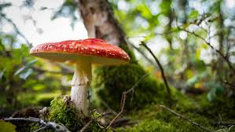

Bienvenue sur Les Pros Des Champignons ,
Les champignons sont des petits êtres fascinants. Il en existe une multitude dont des comestibles et des toxiques ! Malheuresement beaucoup ne savent pas les discerner. C'est pourquoi nous avons crée ce site qui est le guide complet du champignpn ! Nous avons crées ce site WEB afin de vous aider pendant vos petites balades en fôret à distinguer les champignons commestibles et ceux qui ne le sont pas . Ce site regorge de nombreuses recettes avec lesquelles vous ferez de nombreux jaloux. Ce site vous aidera beaucoup pour vos prochaines promenades. Grâce à nous , vous n'aurez plus jamais besoin de vous en faire : vous deviendrait un Pro des champignons !
Ex : Bien que fascinant ce champignon est toxique
Avant de commencer , je joint ci-dessous un schéma qui vous permettra de connaître l'anatomie des champignons. En effet, nous allons utiliser un vocabulaire expliquer sur le schéma.